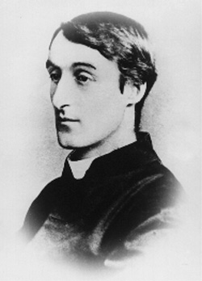

Wednesday, December the 18th, 2013
back to: title, date or indexes
For day five of our tenth anniversary celebrations, here is a repost of an item that first appeared on 21 February 2007. You would do well to memorise it, and to chuck it into a lull during the conversation at one of those swish sophisticated cocktail parties you are forever going to (and I am not).

I have been accused of relentlessly alluding to a single extract from the Journals of Gerard Manley Hopkins—the entry where he describes mesmerising a duck—so here is another, equally fascinating, quote:
Tuncks is a good name. Gerard Manley Tuncks. Pook Tuncks.